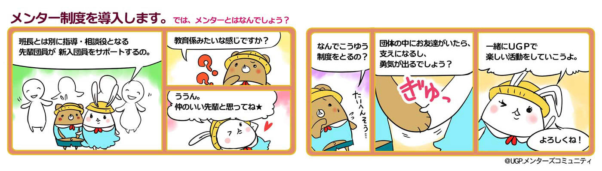

【メンター制度とは？】
UGP団体内における 班長とは別に指導・相談役となる先輩団員が 新入団員をサポートする制度の
ことをいいます。
メンターとはもともと助言者という意味であり、 先輩団員が、新入団員の仕事における 不安や悩みの解消、創作活動の
指導・育成を担当します。
【基本方針】
メンター(サポート役)とメンティ(サポートされる役)の一対一の関係性がこの制度の特徴です。
メンターとメンティになるに
はお互いの同意が必要です。 メンターとメンティは、定まった時点で、互いの対象者をプロフィール(専用の項目がありま
す)に乗せてください。
原則は一対一ですが、メンターの人員が枯渇している場合は、例外として一対多が認められます。